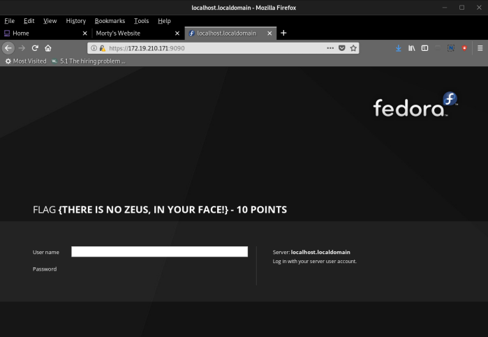
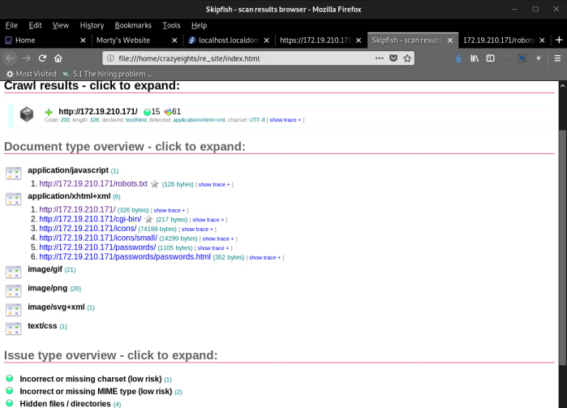
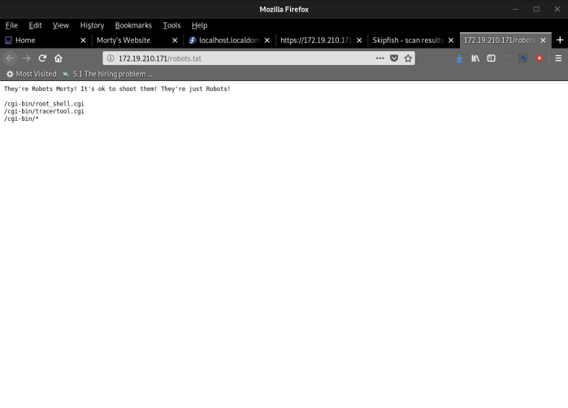
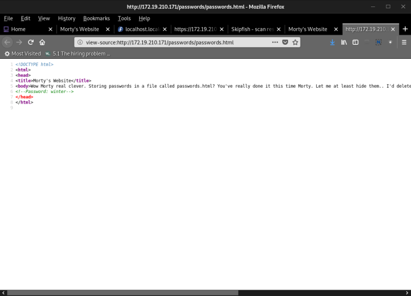
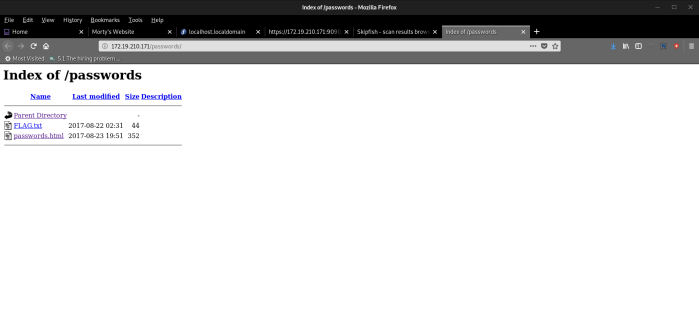
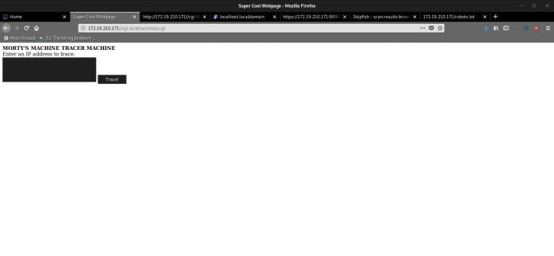
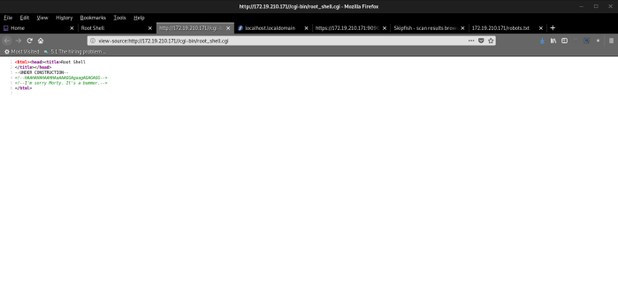

Index
- BasicPenTestingBox
- BasicPenTestingBox2
- bee box
- BossPlayer
- CyberChallenge19
- Dawn
- DC-1
- DC-2
- DC-3
- DerpNStik
- EVM
- Fowsniff
- Gemini Inc 1
- JIS_CTF
- mullidae
- PumpkinFestival
- PumpkinGarden
- PumpkinRaising
- QuaoarCTFHackfest2016
- Rickdiculously Easy
- silky02
- silky1
- Typhoon
- VMS to try
- xss challenges
- Blue
- mr robot
- Unfinished VMS
- CasinoRoyale
- WinterMute Straylight
- connect the dots (unfinished)
- arsenal
- heist
- MyHouse Box
- Sputnik
- Node
- HackInOs
- Seattle
- DC416-Galahad
- Not a Box
- ICE
Rickdiculously Easy
I completed this box but didn't make a write up
crazyeights@kali:~$ ping 172.19.210.171
PING 172.19.210.171 (172.19.210.171) 56(84) bytes of data.
64 bytes from 172.19.210.171: icmp_seq=1 ttl=64 time=0.353 ms
64 bytes from 172.19.210.171: icmp_seq=2 ttl=64 time=0.131 ms
^C
--- 172.19.210.171 ping statistics ---
2 packets transmitted, 2 received, 0% packet loss, time 1000ms
rtt min/avg/max/mdev = 0.131/0.242/0.353/0.111 ms
crazyeights@kali:~$
crazyeights@kali:~$ sudo nmap -sV 172.19.210.171
[sudo] password for crazyeights:
Starting Nmap 7.80 ( https://nmap.org ) at 2019-09-09 20:56 EDT
Nmap scan report for ad10-210-171.resnet.carleton.ca (172.19.210.171)
Host is up (0.00018s latency).
Not shown: 996 closed ports
PORT STATE SERVICE VERSION
21/tcp open ftp vsftpd 3.0.3
22/tcp open ssh?
80/tcp open http Apache httpd 2.4.27 ((Fedora))
9090/tcp open http Cockpit web service
1 service unrecognized despite returning data. If you know the service/version, please submit the following fingerprint at https://nmap.org/cgi-bin/submit.cgi?new-service :
SF-Port22-TCP:V=7.80%I=7%D=9/9%Time=5D76F4C5%P=x86_64-pc-linux-gnu%r(NULL,
SF:42,"Welcome\x20to\x20Ubuntu\x2014\.04\.5\x20LTS\x20\(GNU/Linux\x204\.4\
SF:.0-31-generic\x20x86_64\)\n");
MAC Address: 08:00:27:BF:52:95 (Oracle VirtualBox virtual NIC)
Service Info: OSs: Unix, Linux; CPE: cpe:/o:linux:linux_kernel
Service detection performed. Please report any incorrect results at https://nmap.org/submit/ .
Nmap done: 1 IP address (1 host up) scanned in 36.75 seconds
crazyeights@kali:~$

crazyeights@kali:~$ sudo nmap -A 172.19.210.171
Starting Nmap 7.80 ( https://nmap.org ) at 2019-09-09 21:10 EDT
Nmap scan report for ad10-210-171.resnet.carleton.ca (172.19.210.171)
Host is up (0.00013s latency).
Not shown: 996 closed ports
PORT STATE SERVICE VERSION
21/tcp open ftp vsftpd 3.0.3
| ftp-anon: Anonymous FTP login allowed (FTP code 230)
| -rw-r--r-- 1 0 0 42 Aug 22 2017 FLAG.txt
|_drwxr-xr-x 2 0 0 6 Feb 12 2017 pub
| ftp-syst:
| STAT:
| FTP server status:
| Connected to ::ffff:172.19.211.207
| Logged in as ftp
| TYPE: ASCII
| No session bandwidth limit
| Session timeout in seconds is 300
| Control connection is plain text
| Data connections will be plain text
| At session startup, client count was 3
| vsFTPd 3.0.3 - secure, fast, stable
|_End of status
22/tcp open ssh?
| fingerprint-strings:
| NULL:
|_ Welcome to Ubuntu 14.04.5 LTS (GNU/Linux 4.4.0-31-generic x86_64)
|_ssh-hostkey: ERROR: Script execution failed (use -d to debug)
80/tcp open http Apache httpd 2.4.27 ((Fedora))
| http-methods:
|_ Potentially risky methods: TRACE
|_http-server-header: Apache/2.4.27 (Fedora)
|_http-title: Morty's Website
9090/tcp open http Cockpit web service
| http-title: localhost.localdomain
|_Requested resource was https://ad10-210-171.resnet.carleton.ca:9090/
1 service unrecognized despite returning data. If you know the service/version, please submit the following fingerprint at https://nmap.org/cgi-bin/submit.cgi?new-service :
SF-Port22-TCP:V=7.80%I=7%D=9/9%Time=5D76F80E%P=x86_64-pc-linux-gnu%r(NULL,
SF:42,"Welcome\x20to\x20Ubuntu\x2014\.04\.5\x20LTS\x20\(GNU/Linux\x204\.4\
SF:.0-31-generic\x20x86_64\)\n");
MAC Address: 08:00:27:BF:52:95 (Oracle VirtualBox virtual NIC)
Device type: general purpose
Running: Linux 3.X|4.X
OS CPE: cpe:/o:linux:linux_kernel:3 cpe:/o:linux:linux_kernel:4
OS details: Linux 3.2 - 4.9
Network Distance: 1 hop
Service Info: OSs: Unix, Linux; CPE: cpe:/o:linux:linux_kernel
TRACEROUTE
HOP RTT ADDRESS
1 0.13 ms ad10-210-171.resnet.carleton.ca (172.19.210.171)
OS and Service detection performed. Please report any incorrect results at https://nmap.org/submit/ .
Nmap done: 1 IP address (1 host up) scanned in 38.70 seconds
crazyeights@kali:~$
crazyeights@kali:~$ ftp 172.19.210.171
Connected to 172.19.210.171.
220 (vsFTPd 3.0.3)
Name (172.19.210.171:crazyeights): Anonymous
331 Please specify the password.
Password:
230 Login successful.
Remote system type is UNIX.
Using binary mode to transfer files.
ftp>
ftp> ls
200 PORT command successful. Consider using PASV.
150 Here comes the directory listing.
-rw-r--r-- 1 0 0 42 Aug 22 2017 FLAG.txt
drwxr-xr-x 2 0 0 6 Feb 12 2017 pub
226 Directory send OK.
ftp> get FLAG.txt
local: FLAG.txt remote: FLAG.txt
200 PORT command successful. Consider using PASV.
150 Opening BINARY mode data connection for FLAG.txt (42 bytes).
226 Transfer complete.
42 bytes received in 0.02 secs (1.8639 kB/s)
ftp> cd pub
250 Directory successfully changed.
ftp> ls
200 PORT command successful. Consider using PASV.
150 Here comes the directory listing.
226 Directory send OK.
ftp> ls
200 PORT command successful. Consider using PASV.
150 Here comes the directory listing.
226 Directory send OK.
ftp>
FLAG 2 - FLAG{Whoa this is unexpected} - 10 Points
crazyeights@kali:~$ skipfish -o re_site -S /usr/share/skipfish/dictionaries/minimal.wl http://172.19.210.171




http://172.19.210.171/passwords/FLAG.txt
FLAG 3 - FLAG{Yeah d- just don't do it.} - 10 Points

